생산자동화산업기사 (2002-05-26 기출문제)
1과목: 기계가공법 및 안전관리
1. 주물제품의 중공부분(中空部分)을 만들때 제작하는 목형은?
- 고르개목형
- 코어목형
- 회전목형
- 분할목형
(정답률: 45%)

2. 일정한 온도에서 어느 시간 가열한 후 비교적 늦은 속도로 냉각하는 작업으로, 강의 조직을 미세화하고 내부응력을 제거하여 적절히 인성이 큰 조직을 만드는 열처리는?
- 풀림
- 뜨임
- 불림
- 항온 열처리
(정답률: 25%)
3. 다이스나 로울(roll) 등의 성형공구를 회전 또는 직선운동 시키면서 그 사이에 소재를 밀어 넣어 회전시켜서 성형하는 가공법으로 나사, 기어 등의 생산에 이용되는 가공법은?
- 프레스가공
- 인발가공
- 전조가공
- 단조가공
(정답률: 33%)
4. CAD/CAM 소프트웨어에 의해서 도면을 출력하고자 할 때 정의 되어야 할 내용이 아닌 것은?
- 화면에서 사용된 선의 종류와 색상에 따른 펜의 굵기 지정
- 출력하고자 하는 도면크기 지정
- 출력할 화면의 원점과 도면의 원점 일치시키기
- 출력할 도면의 제작자 등록하기
(정답률: 50%)
5. 그림과 같은 판금용기를 드로오잉(drawing)제작할 때, 두께를 고려하지 않는다면 지름을 d라 하면 소재판(素材板)의 지름 D을 구하는 옳은 식은?
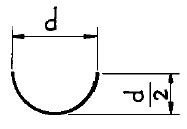
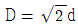
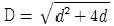
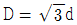
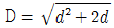
(정답률: 38%)
6. 머시닝센터의 공구 보정에 대한 설명 중 틀린 것은?
- 프로그램에 의한 보정량의 입력은 G20 P_ R_;이다.
- G40 기능은 공구지름 보정 취소이다.
- 공구길이 보정 준비기능은 G43, G44이다.
- G42는 공구지름 우측 보정 기능이다.
(정답률: 36%)
7. 공작기계 중에서 가공 정밀도가 가장 높은 것은?
- 정밀선반(precision lathe)
- 연삭기(grinder)
- 호닝머신(honing machine)
- 보링머신(boring machine)
(정답률: 44%)
8. 빌트업에지(built-up edge)를 좌우하는 인자(因子)에 관한 설명으로 옳은 것은?
- 칩의 흐름에 대한 저항이 클수록 빌트업에지가 작아진다.
- 공구의 윗면 경사각이 클수록 빌트업에지는 커진다.
- 칩의 두께를 감소시키면 빌트업에지는 적게 발생한다.
- 고속으로 절삭할수록 빌트업에지는 증가한다.
(정답률: 43%)
9. 기계등의 CAD적용업무를 컴퓨터에 3차원의 실물모형으로 입력하고 이를 조작하기위하여 컴퓨터의 내부모델로 표시하는 방식이 아닌 것은?
- 와이어 프레임 모델링
- 윤곽 모델링
- 서피스 모델링
- 솔리드 모델링
(정답률: 25%)
10. CNC선반에서 2줄 나사가공시 F는 어떤 값을 나타내는가?
- 나사산의 높이
- 나사절삭 반복횟수
- 나사의 리드
- 나사의 피치
(정답률: 29%)
11. 드릴링 할 때 드릴의 절삭저항을 감소시키기 위하여 치즐에지(chisel edge)를 일부분 연삭하는 것은?
- 시닝(thinning)
- 치핑(chipping)
- 펀칭(punching)
- 샌딩(sanding)
(정답률: 52%)
12. CNC 공작기계의 운전시 유의사항 중 옳지 않은 것은?
- 작업시 안전을 위해 장갑을 낀다.
- 절삭가공 전 반드시 모의작업을 하여 프로그램을 확인한다.
- 공작물의 고정에 유의한다.
- 공구경로에 유의한다.
(정답률: 60%)
13. 다음 프로그램에서 Q_는 무엇을 의미하는가?
- 반복 회수
- 복귀점의 위치
- 이송속도
- 매회 절입량
(정답률: 38%)
14. 2차원 변환 행렬이 아래와 같을 때 해당되는 변환은?
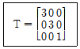
- 이동(translation)
- 확대(scaling)
- 회전(rotation)
- 대칭(reflection)
(정답률: 24%)
15. 다음은 솔리드 모델링 기법에 의한 물체의 표현방식 중 CSG(Constructive Solid Geometry)방식이 B-Rep(Boundary Representation)에 비해 우수한 점을 설명한 것 중 틀린 것은?
- 기본도형을 직접 입력하므로 데이터의 작성 방법이 쉽다.
- 데이터의 구조가 간단하고, 기억용량이 적다.
- 곡면의 작성이 쉽다.
- 3면도나 투시도의 작성이 쉽다.
(정답률: 36%)
16. 전해연마에 관한 설명으로 틀린 것은?
- 가공면에는 방향성이 없다.
- 내마멸성이 좋아진다.
- 내부식성이 좋아진다.
- 연마량이 많으므로 깊은 홈이 제거된다.
(정답률: 40%)
17. 기계의 테이블에 직접 검출기를 설치하여 위치를 검출 피드백 시키는 서보기구는?
- 개방회로 방식(open loop system)
- 폐쇄회로 방식(closed loop system)
- 반폐쇄회로 방식(semi-closed loop system)
- 하이브리드 서보 방식(hybrid servo system)
(정답률: 50%)
18. 탄소강에 대한 드릴의 표준 날 끝각은?
- 118°
- 128°
- 102°
- 90°
(정답률: 77%)
19. 분산처리형 CAD/CAM 시스템의 장점을 열거한 것 중 관련이 없는 것은?
- 컴퓨터 시스템의 신뢰성과 활용성을 높일 수 있다.
- 자료처리 및 계산속도를 증가시킬 수 있다.
- 구성되어 있는 자료들을 효율적으로 관리할 수 있다.
- 컴퓨터 시스템을 확장하는데 유연성이 제한되어 있다.
(정답률: 75%)
20. 용접의 결점에 해당되지 않는 것은?
- 품질검사가 곤란하다.
- 용접모재의 재질에 대한 영향이 크다.
- 제품의 두께가 두껍고 가공공수가 많이 든다.
- 응력집중에 대하여 극히 민감하다.
(정답률: 45%)
2과목: 기계제도 및 기초공학
21. 다음 중 고속도강과 가장 관계가 먼 사항은?
- W-Cr-V(18-4-1)계가 대표적이다.
- 500-600℃로 뜨임하면 급격히 연화(軟化)된다.
- W계와 Mo계 두가지로 크게 나뉜다.
- 각종 공구용으로 이용된다.
(정답률: 47%)
22. 다음은 1줄 리벳겹치기 이음에서 강판의 효율을 표시한식이다. 옳은 것은? (단, P는 리벳의 피치, d는 리벳구멍의 직경이다.)
- η = P - 2d/P
- η = 1 - d/P
- η = P - 2d/d
- η = 1 - P/d
(정답률: 24%)
23. 다음 그림과 같은 원통코일 스프링의 처짐량 δ = 60 ㎜ 일때, 작용하는 하중 W는 몇 kgf인가? (단, 스프링 상수 k1 = 6 ㎏f/㎝, k2 = 2 ㎏f/㎝이다.)
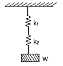
- W = 4 kgf
- W = 6 kgf
- W = 9 kgf
- W = 48 kgf
(정답률: 20%)
24. 볼나사의 특징 중 틀린 것은?
- 나사의 효율이 좋다.
- 백래시(back lash)를 작게 할 수 있다.
- 체결용에 주로 사용된다.
- 높은 정밀도를 오래 유지할 수가 있다.
(정답률: 39%)
25. 볼베어링의 수명 회전수 Ln, 베어링 하중 P, 기본부하용량을 C라 할 경우 다음 중 옳은 것은?
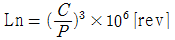
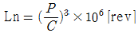
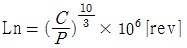
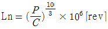
(정답률: 25%)
26. 구상흑연 주철을 만들 때에 사용되는 첨가재는?
- Al
- Cu
- Mg
- Ni
(정답률: 38%)
27. 탄소강에 첨가할 경우 결정립을 미세화시키는 원소는?
- P
- V
- Si
- Al
(정답률: 20%)
28. 브레이크 드럼에서 브레이크 블록을 밀어붙이는 힘이 150㎏f, 마찰계수 μ = 0.3, 드럼의 지름 350㎜로 할때 토크는?
- 9⑤8㎏f.㎜
- 9875㎏f.㎜
- 6758㎏f.㎜
- 7875㎏f.㎜
(정답률: 30%)
29. 탄소강에서 온도가 상승함에 따라 기계적 성질이 감소하지 않는 것은?
- 탄성계수
- 탄성한계
- 항복점
- 단면수축율
(정답률: 23%)
30. 공정점에서의 자유도(degree of freedom)는 얼마인가?
- 0
- 1
- 2
- 3
(정답률: 53%)
31. 인장시험편을 만들때 고려하지 않아도 되는 사항은?
- 시험편의 무게
- 표점거리
- 평행부의 길이
- 평행부의 단면적
(정답률: 32%)
32. 다음 중 역류를 방지하여 유체를 한쪽 방향으로 흘러가게 하는 밸브는?
- 게이트 밸브
- 첵 밸브
- 글로브 밸브
- 볼 밸브
(정답률: 64%)
33. 연신율이 크고, 인장강도 25㎏f/㎜2로 전구의 소켓이나 탄피용으로 쓰이는 황동은?
- 톰백
- 7.3 황동
- 6.4 황동
- 함석 황동
(정답률: 34%)
34. 기어의 압력각을 크게 할 때 일어나는 현상으로 옳은 것은?
- 이의 강도가 약화된다.
- 축간거리가 멀어진다.
- 물림율이 감소한다.
- 속도비가 크게 된다.
(정답률: 26%)
35. 코터의 폭이 20 ㎜, 두께가 10 ㎜, 코터의 허용 전단응력이 2 ㎏f/㎜2이라면 코터에 가할 수 있는 하중은 얼마인가?
- 400 ㎏f
- 800 ㎏f
- 1600 ㎏f
- 3200 ㎏f
(정답률: 20%)
36. 평벨트 전동에서 유효장력이란 무엇인가?
- 벨트의 긴장측 장력과 이완측 장력과의 차를 말한다.
- 벨트의 긴장측 장력과 이완측 장력과의 비를 말한다.
- 벨트 풀리의 양쪽 장력의 합을 평균한 값이다.
- 벨트 풀리의 양쪽 장력의 합을 말한다.
(정답률: 35%)
37. 니켈 60~70% 정도로 함유한 Ni-Cu계의 합금으로, 내식성이 좋으므로 화학공업용 재료로 많이 쓰이는 재료는?
- 톰백
- 알코아
- Y합금
- 모넬메탈
(정답률: 33%)
38. 연성(延性)재료가 고온에서 정하중을 받을때 기준 강도로서 어떤 것을 취하는가?
- 항복점
- 피로한도
- 크리프한도
- 극한강도
(정답률: 40%)
39. 고Ni강으로 강력한 내식성을 가지고 있으며, 약한 자장으로 큰 투자율을 가지고 있으므로, 해저 전선의 장하코일 등에 쓰이고 있는 것은?
- 인바아
- 엘린버
- 퍼어멀로이
- 바이메탈
(정답률: 29%)
40. 다음은 고주파경화법의 장점이 아닌 것은?
- 재료의 표면부위만 경화된다.
- 가열시간이 대단히 짧다.
- 표면의 탈탄 및 결정입자의 조대화가 일어나지 않는다.
- 표면에 산화가 많이 일어난다.
(정답률: 50%)
3과목: 자동제어
41. 다음 중 광전센서의 일반적인 특징이 아닌 것은?
- 비접촉식으로 물체를 검출한다.
- 검출물체의 대상이 넓다.
- 응답속도가 느리다.
- 검출거리가 길다.
(정답률: 72%)
42. 그림은 단동실린더 제어회로이다. 설명이 옳은 것은?
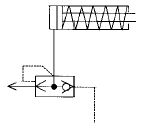
- 후진속도 증가회로
- 전진속도 증가회로
- 전진속도 조절회로
- 후진속도 조절회로
(정답률: 25%)
43. 다음 그림의 전달함수의 값은?
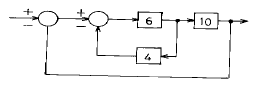
- 0.6
- 0.7
- 0.8
- 0.9
(정답률: 44%)
44. 다음 중 폐루프 시스템의 기본구성이 아닌 것은?
- 제어장치
- 구동기
- 신호발생기
- 센서
(정답률: 32%)
45. 유압 실린더에서 속도의 감속을 위하여 미터-인 방법으로 유량조정 밸브를 피스톤측에 부착하였다. 이 때 실린더에 인장하중이 작용하면 실린더는 제어되지 않은 속도로 운동하게 된다. 이를 방지할 수 있는 밸브는?
- 카운터 밸런스 밸브
- 브레이크 밸브
- 체크 밸브
- 시퀀스밸브
(정답률: 57%)
46. 다음 중 전압을 변위로 변환하는 장치는?
- 벨로즈
- 전자석
- 전위차계
- 스프링
(정답률: 35%)
47. 다음의 그림은 무엇을 나타낸 것인가?
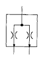
- 집류밸브
- 분류밸브
- 스톱밸브
- 감압밸브
(정답률: 46%)
48. 공압 실린더의 설치 형식을 결정할 때 부하가 한 평면내에서 요동할 경우 적당한 설치 형식은?
- 풋형
- 플랜지형
- 클레비스형
- 다단형
(정답률: 47%)
49. 주회로의 압력보다 저압으로 감압시켜 분기회로 구성에 사용되는 밸브 명칭은?
- 시퀀스 밸브
- 릴리프 밸브
- 감압 밸브
- 무부하 밸브
(정답률: 50%)
50. 다음 중 PLC에 대한 설명이 아닌 것은?
- 저장된 프로그램에 의해 입력과 출력을 모니터링하면서 기계와 공정을 제어한다.
- 하드웨어를 바꾸지 않고 소프트웨어를 이용하여 제어 방법을 변경할 수 있다.
- 입력과 출력의 인터페이스는 PLC 외부에서 이루어진다.
- 프로그램은 주로 논리와 스위칭 연산으로 구성된다.
(정답률: 46%)
51. 다음 중 서보제어에 적합한 것은?
- 비행기의 방향제어
- 수조의 온도제어
- 커피자판기의 커피양제어
- 엘리베이터 제어
(정답률: 50%)
52. 다음 여과방식 중 공기여과기의 여과방식이 아닌 것은?
- 흡습제를 사용하여 분리하는 방식
- 가열하여 분리하는 방식
- 충돌판을 닿게하여 분리하는 방식
- 원심력을 이용하여 분리하는 방식
(정답률: 37%)
53. 압력제어 밸브는 유압시스템의 전체 혹은 일부의 압력을 제어한다. 다음 중 압력 릴리프 밸브의 사용목적에 따른 밸브 명칭이 아닌 것은?
- 카운터 밸런스 밸브
- 브레이크 밸브
- 로딩 밸브
- 시퀀스 밸브
(정답률: 46%)
54. 전달함수의 일반적인 식을 나타내면?
- 전달함수 = 라플라스 변환시킨 출력 / 라플라스 변환시킨 입력
- 전달함수 = 라플라스 변환시킨 입력 / 라플라스 변환시킨 출력
- 전달함수 = 라플라스 변환시킨 입력 ＋ 라플라스 변환시킨 출력
- 전달함수 = 라플라스 변환시킨 입력 × 라플라스 변환시킨 출력
(정답률: 38%)
55. 유압 시스템의 펌프나 밸브 등에서 발생하는 캐비테이션(cavitation) 현상의 설명으로 옳지 않은 것은?
- 금속 표면의 침식
- 유압유-공기 혼합물의 자연 발화
- 시스템 내의 소음이나 진동
- 압력손실 감소와 온도 강하
(정답률: 26%)
56. 질량 M인 물체에 힘 f를 가하여 거리 x만큼 이동한 물리계의 전달함수은? (단, 초기조건은 0 이다.)
- Ms
- 1/ Ms
- Ms2
- 1 / Ms2
(정답률: 35%)
57. 유압 실린더를 이용한 드릴작업 시 드릴 작업이 끝나는 부분에서는 부하 저항이 급속히 감소하여 드릴이 돌출하게 된다. 이를 방지하기 위하여 실린더에 배압을 주고자 한다. 이때 사용 할 밸브로 적합한 것은?
- 릴리프 밸브
- 감압 밸브
- 카운터 밸런스 밸브
- 무부하 밸브
(정답률: 42%)
58. 양 끝의 지름이 다른 관이 수평으로 놓여 있다. 왼쪽에서 오른쪽으로 물이 흐른다고 가상하고 정상류를 이루고 매초 2.8ℓ 의 물이 흐른다. B부근의 단면적이 20㎝2이라면 그 부분의 물의 속도는 얼마가 되겠는가?
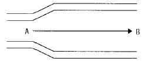
- 14cm/sec
- 56cm/sec
- 140cm/sec
- 56m/sec
(정답률: 56%)
59. 다음중 제어계의 성능으로서 3가지 중요한 특성값이 아닌것은?
- 정상편차
- 속응성
- 결합계수
- 안정도
(정답률: 36%)
60. 피드백 제어계의 특징이 아닌 것은?
- 품질이 향상된다.
- 생산속도를 상승시킨다.
- 연료, 원료 및 동력을 절감할 수 있다.
- 운전 및 수리에 고도의 지식이 필요없다.
(정답률: 68%)
4과목: 메카트로닉스
61. 전동기가 저속으로 회전할 때 그 원인에 해당하는 것은?
- 단상운전
- 코일의 단락
- 권선의 접지
- 축받이의 고착
(정답률: 34%)
62. 그림과 같이 PLC프로그램이 되어있는 경우, LS2와 LS3가 만일 동시에 ON이 되었다고 한다면 다음 중 맞는 것은?
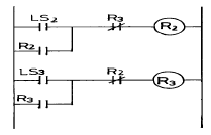
- R2와 R3가 계속 On/OFF를 반복한다.
- R2가 ON이 되어 R3는 ON이 될 수 없다.
- R3가 ON이 되어 R2는 ON이 될 수 없다.
- R2와 R3가 동시에 ON이 된다.
(정답률: 42%)
63. 직접 반사형 광 센서는 검출 물체에 따라 검출 거리가 달라진다. 직접 반사형 광센서를 이용하여 물체의 유무를 검출하려고 할 때 다음 물체 중 백색 무광택지보다 검출 거리가 더 긴 물체는?
- 자연색 포장 박스(골판지)
- 알루미늄판
- 적색 무광택지
- 흑색포
(정답률: 47%)
64. 어떤 제어시스템에서 0에서 5V를 4개의 2진 신호만을 사용하여 간격을 나눌 때 표시되는 최소값은?
- 0.313V
- 1.250V
- 0.625V
- 0.039V
(정답률: 32%)
65. 항온조의 온도가 일정하게 유지시키고자 한다. 이때의 제어방식은?
- 되먹임 제어
- 시퀀스 제어
- 정성적 제어
- 우선 제어
(정답률: 58%)
66. 다음의 진리값은 어떤 논리를 나타내는가?
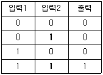
- 논리적
- 논리합
- 등가회로
- 배타회로
(정답률: 36%)
67. 다음 공압 실린더 중 비피스톤형이며 마찰력이 적고, 행정이 짧은 실린더는?
- 램형 실린더
- 다이어 프램 실린더
- 탠덤형 실린더
- 텔레스코프형 실린더
(정답률: 34%)
68. 그림과 같은 논리회로의 설명 중 틀린 것은?
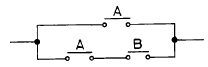
- A
- A+AB
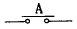
- B가 동작하지 않으면 A가 동작하더라고 회로는 동작하지 않는다.
(정답률: 53%)
69. 다음 자동 제어계에 속하지 않는 제어계는?
- ON-OFF 제어계
- 시퀀스 제어계
- 피드백 제어계(되먹임 제어계)
- 연속 데이터 제어계
(정답률: 53%)
70. 낮은 출력이 요구되는 곳에만 사용되나 대단히 높은 속도를 얻을 수 있는 공압 모터는?
- 기어 모터
- 터빈 모터
- 피스톤 모터
- 미끄럼 날개 모터
(정답률: 59%)
71. 다음 그림에서 (a),(b)는 등가이다. 그림(b)의 A에 들어갈 값으로 옳은 것은?
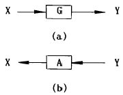
- 1 + G
- GX
- 1 /(1+G)
- 1 / G
(정답률: 29%)
72. 다음 논리식 중에서 옳지 못한 것은?
- A + A = A
- A · A = A
- A + 0 = 0
- A +
 = 1
= 1
(정답률: 49%)
73. 자동화 시스템을 구축 할 때 발생되는 문제점에 해당되지 않는 것은?
- 명확하지 못한 목표설정
- 관리를 위한 Data 부족
- 자동화 전문 요원 부족
- 자재비, 인건비 과다
(정답률: 60%)
74. 다음 중 전기를 이용하는 기계에서 정지 스위치를 투입하여도, 기계가 정지하지 않는 고장의 원인이 아닌 것은?
- 단락(short) 사고
- 접지(earth) 사고
- 정전 사고
- OFF 스위치 접점 불량
(정답률: 50%)
75. 일명 메이크(make)접점이라고도 하며 조작하고 있는 동안에만 닫히는 접점은?
- a접점
- b접점
- c접점
- 브레이크 접점(break contact)
(정답률: 50%)
76. 다음중 릴레이 제어반과 비교할 경우 PLC 의 장점은?
- 소형화
- 기구 배열식
- 독립한 제어장치
- 유접점
(정답률: 43%)
77. 하드 와이어드한 제어(릴레이 제어)와 소프트 와이어드한 제어 (PLC 제어)의 차이점 설명 중 맞지 않는 것은?
- 릴레이 제어의 경우 회로도는 배선도이다.
- 릴레이 제어가 PLC제어의 경우보다 배선이 간단하다.
- 제어 내용의 변경이 용이한 것은 PLC 제어이다.
- 소프트웨어와 하드웨어 구성을 동시에 할 수 있는 것이 PLC 제어이다.
(정답률: 60%)
78. 물류 장치의 한 종류인 AGV에 대한 다음 설명 중 틀린 것은?
- AGV의 안전장치로 범퍼, 비상 정지 스위치, 탈선 정지 기능, 빔 감지기 등이 있어 주행시 오동작을 최대한 예방하여야 한다.
- 마크판은 AGV의 가감속, 좌우회전, 정지 등을 제어하는 궤도상의 표시 장치이다.
- AGV는 그 위치 정보를 무선 혹은 유선 통신 장치를 이용하여 중앙 통제국에 전송함으로써 물류 처리가 가능하도록 하는 것이 일반적이다.
- AGV는 공장내 고정된 궤도를 따라 작업물을 이동시키는 물류 장치로 궤도를 변경할 수는 없다.
(정답률: 59%)
79. 두 개의 입력회로에서 두 입력이 같으면 출력이 0이고, 두 입력상태가 다를 때 출력이 1이 되는 회로는?
- NAND 회로
- NOR 회로
- XOR 회로
- AND 회로
(정답률: 54%)
80. 다음 시퀀스(sequence) 제어계에서 불대수 관계식이 틀린 것은?
- X + 0 = x
- X · 1 = x
- X ·
 = 0
= 0  + x = 0
+ x = 0
(정답률: 52%)